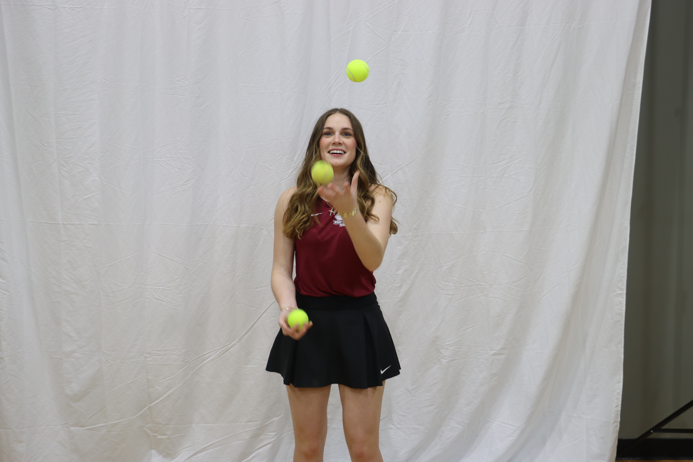
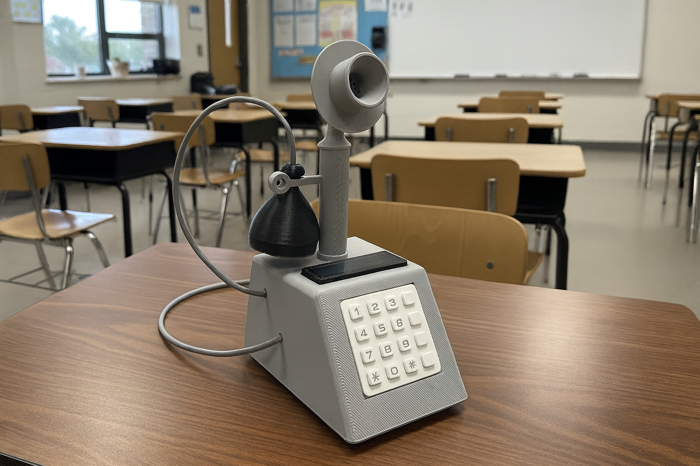
Embedded microcontroller system for keypad input, DTMF output, LCD feedback
Classic game reimagined with FPGA hardware design
Competitive robotics project showcasing autonomous systems
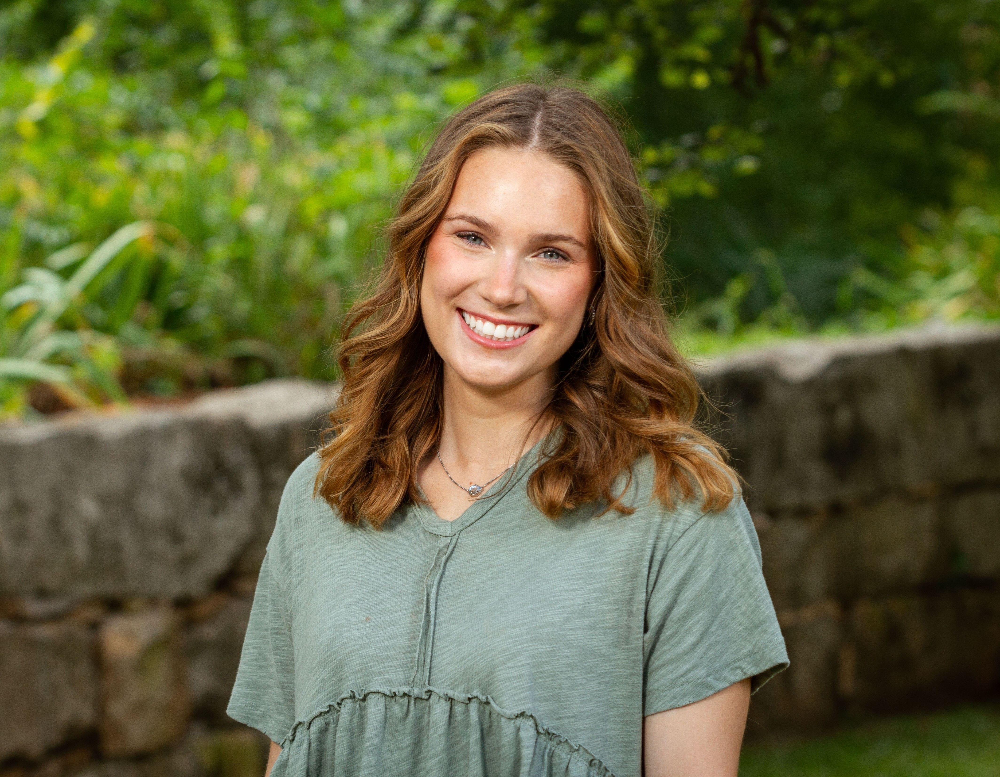
My journey into engineering began with a simple fascination: How do theme parks create magic? Behind every thrilling ride, immersive environment, and moment of wonder lies brilliant engineering, creative problem-solving, and meticulous attention to detail.
As a dual-major student at Rose-Hulman Institute of Technology studying Mechanical Engineering and Computer Engineering with a minor in Robotics, I've spent years building the technical foundation to turn imagination into reality. But more importantly, I've learned to think like a storyteller—to see engineering not just as solving problems, but as crafting experiences that move people.
Whether I'm programming FPGAs, designing mechanical systems, or building autonomous robots, I approach every project with the same question: How can this create joy, wonder, or accessibility for others?
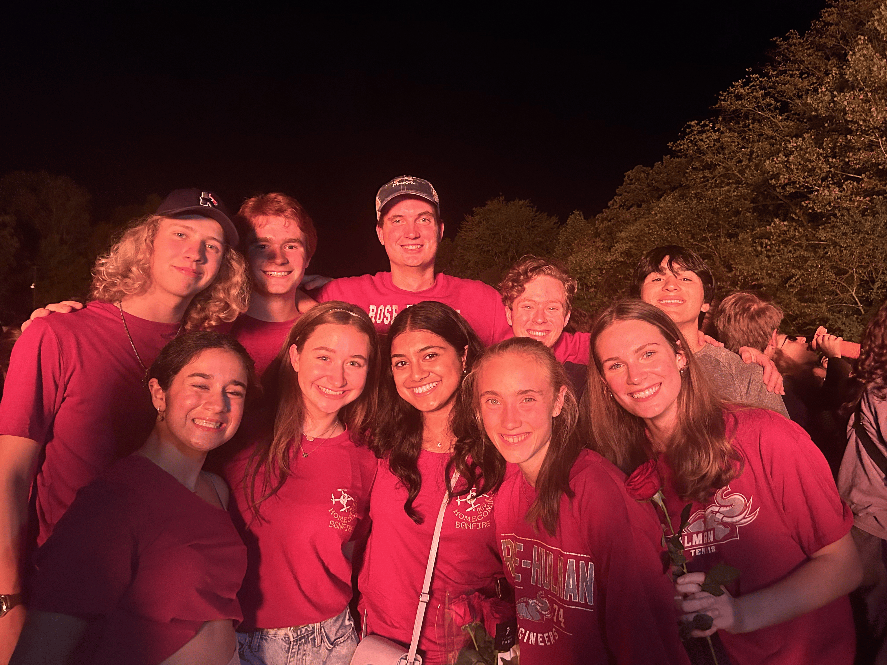
August 2024 - Present
Bachelor of Science in Computer Engineering
Bachelor of Science in Mechanical Engineering
Master of Science in Engineering Management
Minors: Robotics, Systems Engineering
At Rose-Hulman, I'm pursuing a dual-degree in that combines the precision of mechanical engineering with the innovation of computer engineering. This unique combination allows me to design both the physical systems and the intelligent control that bring immersive experiences to life.
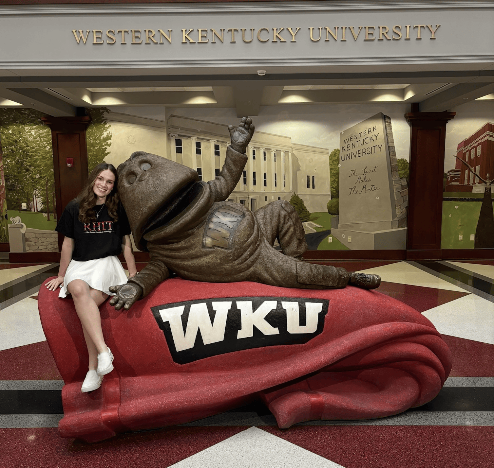
August 2022 - May 2024
Associate of Arts in Interdisciplinary Studies
Through WKU, I built a strong foundation in mathematics, sciences, and humanities while developing critical thinking and communication skills essential for engineering leadership.
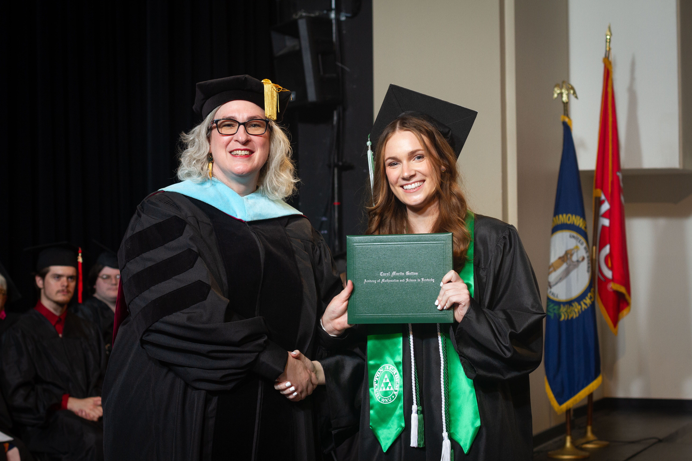
August 2022 - May 2024
A prestigious residential program for exceptional Kentucky high school students, the Gatton Academy provided early access to university-level STEM courses and research opportunities. This accelerated program allowed me to dive deep into advanced mathematics, physics, and engineering while surrounded by similarly driven peers at Western Kentucky University.
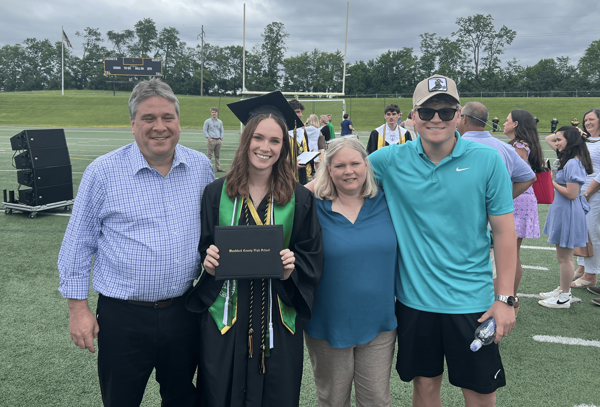
August 2020 - May 2024
My high school years laid the groundwork for my engineering journey, where I discovered my passion for STEM, developed leadership skills through athletics and clubs, and built the work ethic that drives me today.
• AC Circuits
• Communication Netwroks
• Computer Architecture
• Data Structures
• DC Circuits
• Digital Systems
• Electronic Device Modeling
• Embedded Systems
• Microcontrollers
• Object-Oriented Programming
• Signal Processing
• Design for Manufacturing
• Dynamics
• Engineering Statistics
• Fluid Systems
• Materials
• Mechanics of Deformable Solids
• Measurement Systems
• Numerical Methods of Engineering Analysis
• Statics and Mechanics of Materials
• System Dynamics
• Thermodynamics
• Intellectual Properties for Engineering
• Leadership and Global Challenges
• Risk Analysis & Mangement
Vice President / Competition Lead
January 2026 - Present
Leading a team of passionate engineers and designers in creating innovative theme park experiences and competing in national design challenges. As VP and Competition Lead, I coordinate project development, mentor team members, and bridge the gap between creative vision and technical execution.
This role combines my love for immersive storytelling with rigorous engineering design, allowing me to explore ride systems, show control, and experience design while building leadership skills in a field I'm deeply passionate about.
Skills:Experience design, project leadership, systems integration, creative problem-solving, team coordination
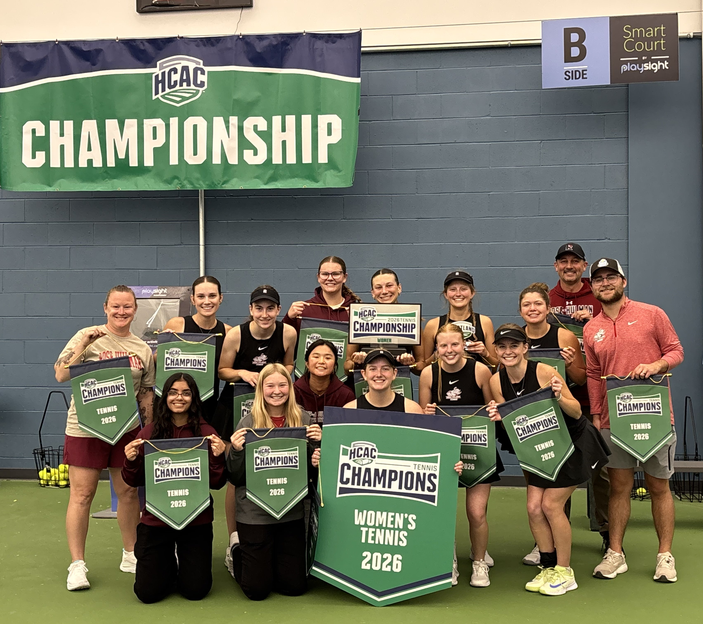
Student-Athlete
August 2024 - Present
As a member of the Rose-Hulman varsity tennis team, I've learned that excellence requires more than just technical skill—it demands mental toughness, strategic thinking, and unwavering dedication. Tennis has taught me how to perform under pressure, adapt to changing conditions, and maintain focus during long, grueling matches.
Beyond my own performance, I've had the privilege of serving in leadership roles, mentoring younger players and helping build team culture. I've learned that the best teams are built on trust, communication, and a shared commitment to growth. These lessons translate directly to engineering teams, where collaboration and mutual support are essential for success.
Key Skills Developed:Resilience, strategic thinking, time management, mentorship, competitive drive, team dynamics
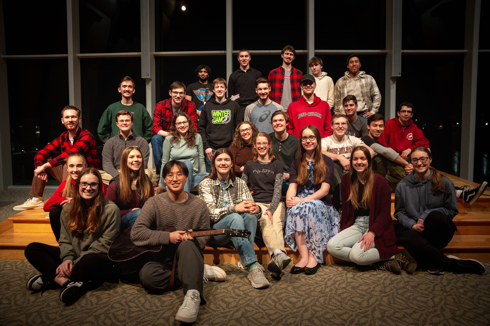
Hospitality & Outreach Coordinator
August 2024 - Present
As Hospitality & Outreach Coordinator, I create welcoming environments for students to connect, grow, and find community. This role has deepened my understanding of inclusive leadership and the importance of creating spaces where everyone feels they belong.
Through organizing events, coordinating outreach initiatives, and building relationships across campus, I've developed skills in event planning, communication, and community building. This work reflects my belief that the best solutions—whether in engineering or in life—center on understanding and serving people.
Impact Areas:Community building, event coordination, inclusive leadership, interpersonal communication, service orientation
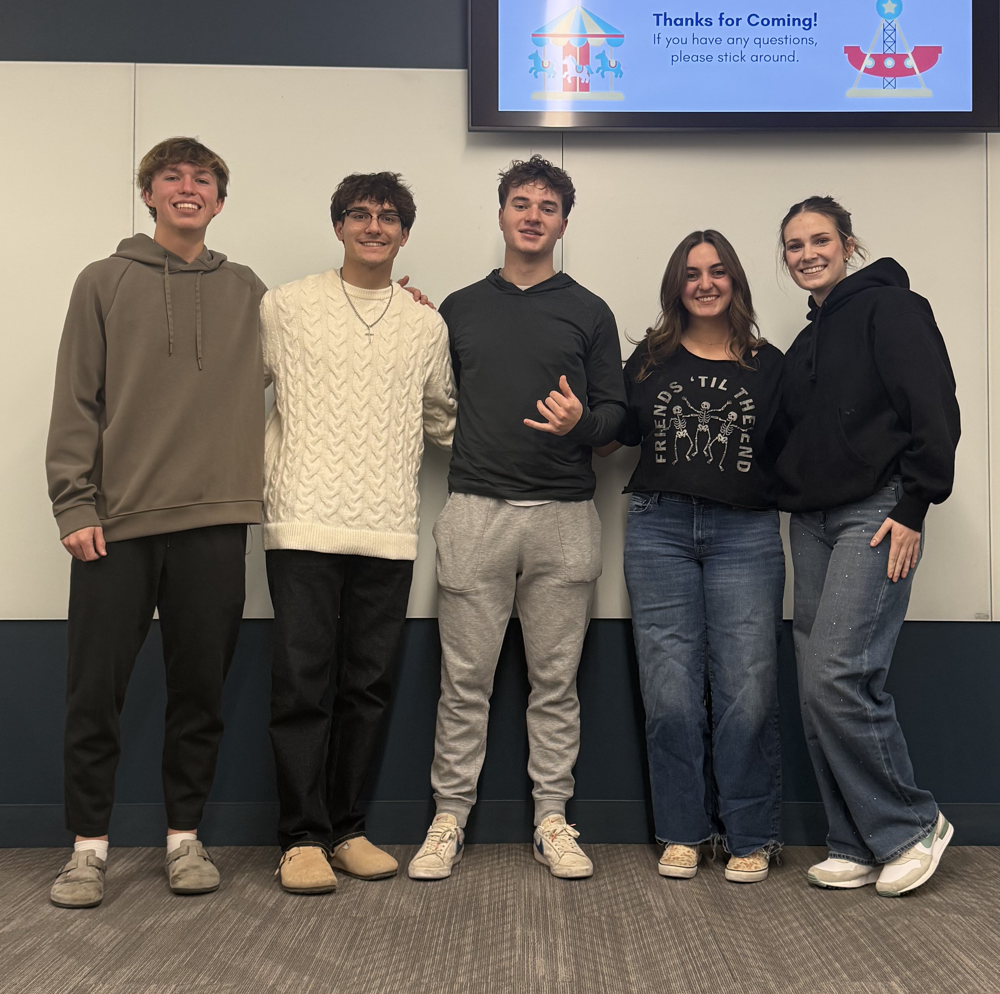
January 2026 - Present
Leading a team of passionate engineers and designers, I coordinate project development from concept to completion, manage competition strategy, and mentor team members in both technical skills and creative thinking. This role requires balancing the artistic vision of themed entertainment with the rigorous engineering required to make it real.
Leadership Impact:Project coordination, team mentorship, cross-functional collaboration, strategic planning, public presentation
August 2024 - Present
Creating welcoming environments where students can connect, grow, and find community. I organize events, coordinate outreach initiatives, and build relationships across campus. This role has taught me the importance of inclusive leadership and creating spaces where everyone belongs.
Leadership Impact:Event planning, community building, inclusive leadership, interpersonal communication, service coordination
August 2024 - Present
As a varsity athlete, I've taken on informal leadership roles—mentoring younger players, fostering team culture, and leading by example both on and off the court. Tennis has taught me that leadership isn't just about titles; it's about showing up, supporting your teammates, and consistently giving your best.
Leadership Impact:Mentorship, team building, leading by example, resilience under pressure, performance optimization
My approach to leadership is rooted in servant leadership—the idea that the best leaders serve their teams, empower others to succeed, and create environments where everyone can contribute their best work. Whether I'm coordinating a theme park design project, organizing campus events, or supporting my tennis teammates, I focus on:
I believe the best engineering happens at the intersection of creativity and technical precision. Technology alone doesn't create magic—it's the story we tell, the emotion we evoke, and the human connection we foster that transforms engineering into something extraordinary.
Every project I undertake is an opportunity to tell a story, whether that's the narrative of a theme park attraction or the journey of a user interacting with a product. I approach engineering as a form of storytelling where every design decision contributes to a larger experience.
My creativity extends beyond engineering projects. I'm passionate about design, whether that's sketching ideas for new inventions, exploring visual storytelling, or simply appreciating the art and design in everyday experiences. This creative mindset influences how I approach technical challenges—I don't just ask "Does it work?" but "Does it create an experience worth having?"
I love exploring the intersection of aesthetics and function, where beautiful design meets purposeful engineering. From typography to color theory to spatial design, I study the elements that make experiences memorable and emotionally resonant.
Great experiences should be available to everyone. I'm committed to designing systems, products, and experiences that consider diverse abilities, backgrounds, and needs from the very beginning—not as an afterthought.
Inclusive design isn't just ethical—it's smart engineering. When we design for accessibility, we often discover innovations that benefit everyone. Universal design principles make experiences better for all users, not just those with specific needs.
Travel has been one of my greatest teachers. Experiencing different cultures, seeing how people solve problems in different contexts, and witnessing diverse approaches to design and engineering has broadened my perspective tremendously.
From theme parks around the world to museums, cultural landmarks, and immersive experiences, each journey deepens my understanding of what makes experiences memorable and meaningful. I'm fascinated by how different cultures create joy, preserve traditions, and use design to tell their stories.
The most meaningful work happens in teams. I value diverse perspectives, cross-disciplinary collaboration, and the idea that everyone brings unique insights to the table. The best solutions emerge when engineers, artists, designers, and storytellers work together.
I'm committed to lifelong learning—staying curious, embracing challenges, and recognizing that every project, every person, and every failure is an opportunity to grow. The field of engineering is constantly evolving, and I'm excited to evolve with it.
Beyond coursework, I'm fascinated by the potential of robotics to transform how we interact with the world. From autonomous systems to human-robot collaboration, I'm constantly exploring how intelligent machines can enhance human experiences rather than replace them.
I'm particularly interested in robotics applications in themed entertainment—animatronics, interactive characters, and autonomous show systems that create magical moments for guests while pushing the boundaries of what's technically possible.
At the core of everything I do is a simple belief: engineering should make life better, more joyful, and more wonder-filled. Whether I'm designing a complex system or solving a technical problem, I ask myself: "Will this bring delight to someone's life?"
This value drives my passion for themed entertainment, where engineering has the explicit purpose of creating joy, wonder, and memories that last a lifetime. It's why I'm pursuing a career where I can use my technical skills to bring smiles to faces and magic to moments.
I'm endlessly curious about how technology creates emotion. Whether it's a theme park attraction, an interactive installation, or a live performance, I study the technical systems that create wonder—projection mapping, motion control, interactive sensors, synchronized show systems, and more.
This interest drives my academic and career goals, as I work to master the multidisciplinary skills needed to design the next generation of immersive experiences.
I believe work should have meaning beyond the paycheck. I'm drawn to projects and organizations that align with my values—those that prioritize people, sustainability, creativity, and positive impact on the world.
This is why I'm passionate about theme park engineering: it combines technical excellence with the clear purpose of creating experiences that bring people together, foster imagination, and create lasting memories across generations.
My extracurricular activities, interests, and values aren't separate from my engineering journey—they're integral to it. Theme park design gives me hands-on experience in the field I love. Tennis has taught me discipline and resilience. Faith-based leadership has developed my communication and community-building skills. Creative pursuits have expanded my problem-solving toolkit. Travel has broadened my perspective on design and human experience.
These experiences make me a better engineer because they remind me that engineering is ultimately about people. Whether I'm designing a ride system, programming a robot, or creating an immersive experience, I'm not just solving technical problems—I'm creating moments that matter, building systems that serve, and crafting experiences that bring joy.
This holistic perspective is what I bring to every project, every team, and every challenge.
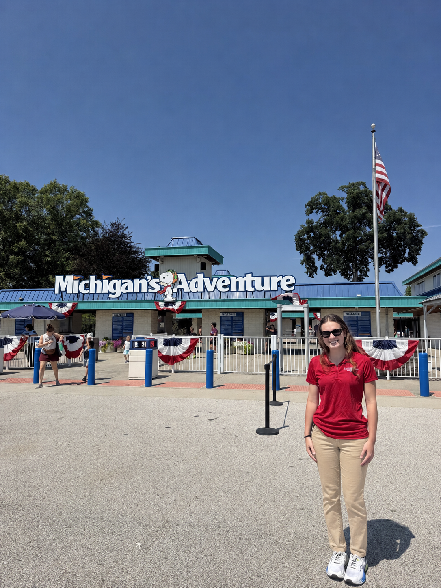
May 2026 - August 2026
Key Responsibilities:• Conducted inspections of rides and attractions in accordance with ASTM F24 standards, OSHA guidelines, and Six Flags safety protocols, ensuring safe and consistent operation
• Responded to ride calls on 40+ attractions, troubleshooting mechanical and operational issues in real time
• Performed and supported brake maintenance, train rebuilds, and lap bar repairs and monitored ride foundations and footers for potential issues
• Collaborated with maintenance and operations teams to support efficiency, maintain compliance, and enhance overall guest experience across the park
• Contributed to process improvements and small-scale engineering projects focused on ride reliability
• Participated in leadership development programs and business seminars while strengthening technical problem-solving, communication, and teamwork skills
ASTM F24 standards, electrical troubleshooting, mechanical troubleshooting, ride control systems, show controls, preventative maintenance, safety inspections, project management
Engineering Project:Served as electrical lead for a three-person intern project developing a new show control system and retheme for a wooden coaster. Worked directly with park managers and executives to integrate lighting, effects, and other technical systems into the guest experience. Developed technical guide and maintenance protocol adhering to ASTM-F24 and OSHA standards to ensure proper upkeep.
Impact:Streamlined shut-down procedure by creating documention for all 40+ attractions, directly improved guest experience by implementing Wolverine Wildcat Special Effects, provided maintenance team with passionate outlook and technical experience, and reduced ride downtime by ensuring proper operation of attractions.
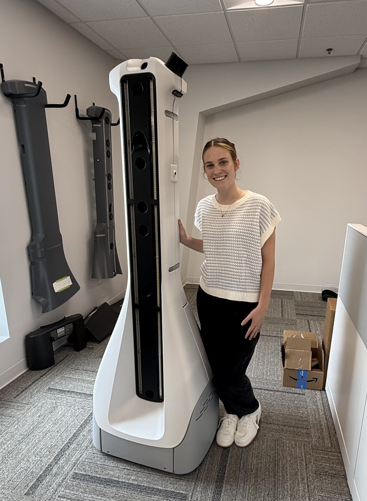
June 2025 - September 2025
Key Responsibilities:• Monitored 700+ autonomous robots across 25+ companies in real time, analyzing system alerts, performance logs, and control system feedback to troubleshoot operational issues
• Authored 50+ Confluence technical documents on robot subsystems, repair protocols, and alert monitoring; boosting article traffic by 400%
• Remotely assisted technicians with field-replaceable unit (FRU) replacements and system repairs
• Utilized LiDAR technology to gather spatial data of retail store environments; processed data into editable 2D and 3D maps using AI tools and GIMP
• Collaborated daily with global team to provide customers quality service 24/7
Navigation systems, sensor arrays, control software, system logs analysis, remote support
Impact:Reduced average robot downtime, improved system reliability, and developed troubleshooting protocols that increased team efficiency
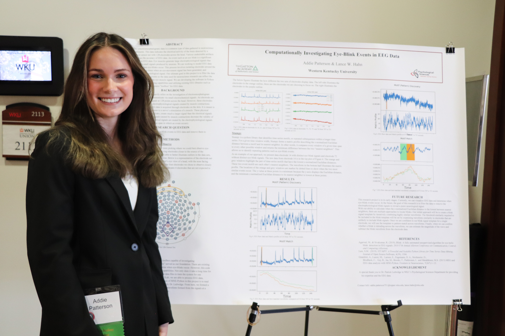
January 2023 - May 2024
Analyzed EEG signals to identify and remove eye-blink events via filtering.
Key Responsibilities:• Developed Python scripts for EEG signal analysis, removing eye-blink artifacts via Fourier analysis filters and feedback control methods with 95% accuracy
• Utilized problem-solving skills to design a non-AI signal processing approach that achieved faster analysis and required less data than AI methods, eliminating the need for model training
• Documented analysis workflows in GitHub repository, ensuring reproducibility and version control
• Collaborated with research mentor and various campus department to collect data for interpretation
• Coauthored and presented a research poster at the WKU Student Scholar Showcase
Python, fourier transforms, signal processing, adaptive filtering
Impact:Developed program to filter out eye blink events without AI, improving data accuracy and decreasing filter time significantly.
My work experience has taught me that great engineering isn't just about technical skills—it's about understanding real-world constraints, user needs, and the importance of reliability. From maintaining robots in demanding retail environments to conducting research with complex biological signals, I've learned to:
These experiences have prepared me to contribute meaningfully to teams designing the next generation of immersive experiences.
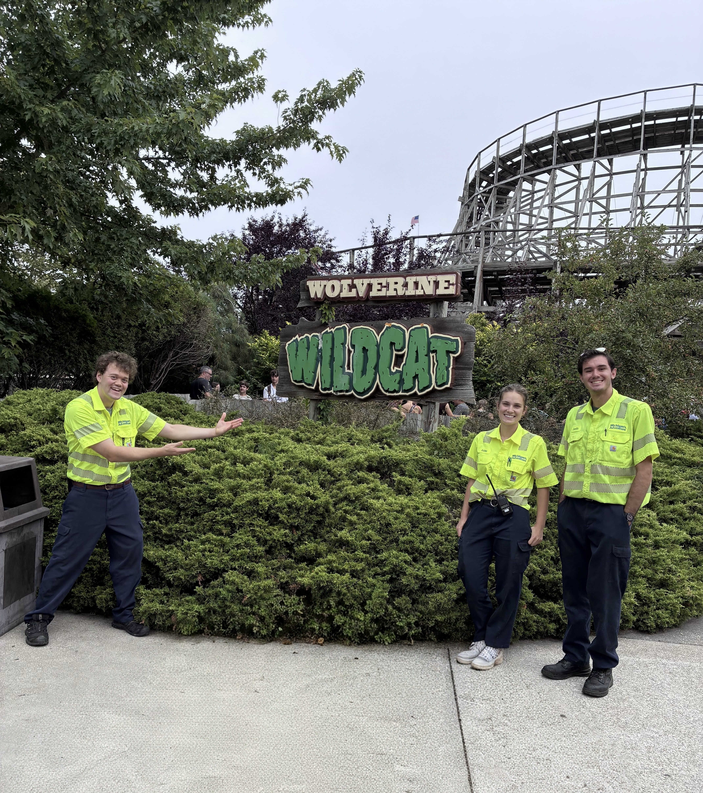
Engineered an immersive tunnel experience integrating show control, lighting, audio, fog, and themed effects
Embedded microcontroller system for keypad input, DTMF output, LCD feedback
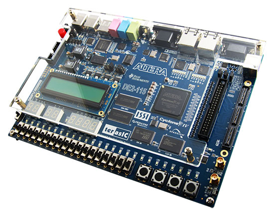
Classic game reimagined with FPGA hardware design
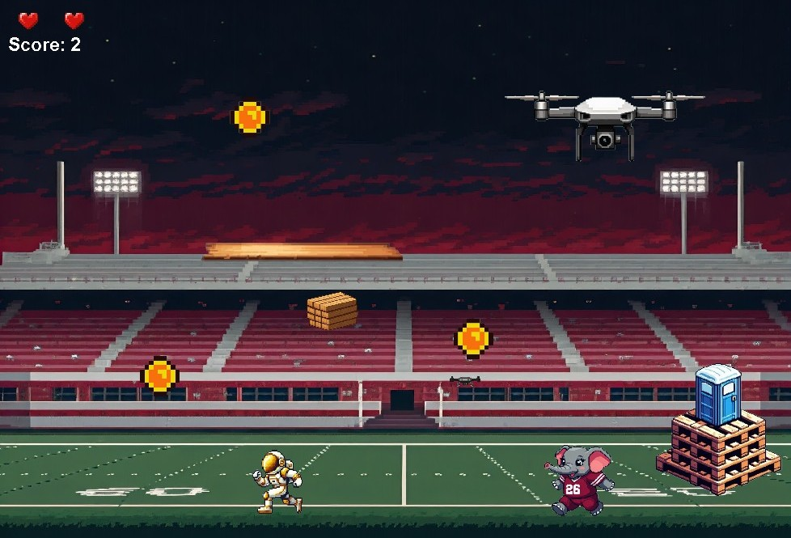
Interactive digital experience for campus tradition
Competitive robotics project showcasing autonomous systems
Physics-based interactive learning game
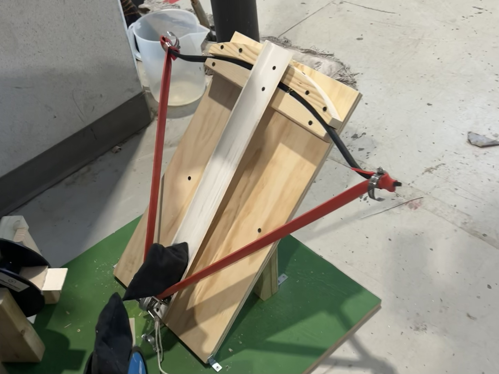
Automated mechanical system with precision targeting
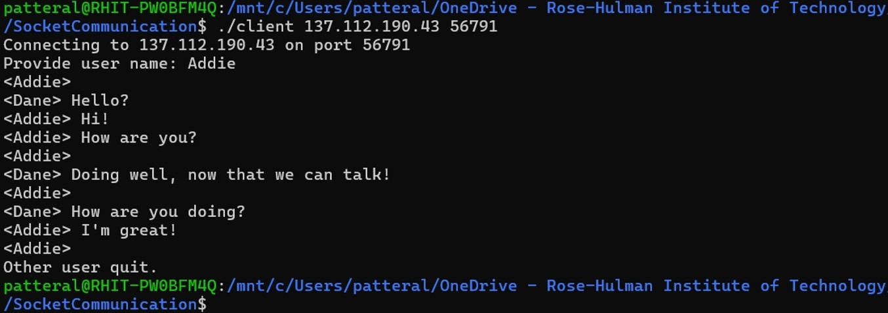
TCP/IP client-server chat application in C
System modeling and signal conditioning circuit design
Frequency response analysis and circuit redesign
Electromechanical system modeling and vibration analysis
Audio system modeling and enclosure optimization
RISC-V processor implementation in Verilog
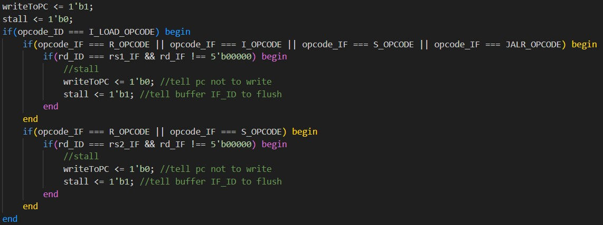
Advanced RISC-V processor with hazard resolution
My resume showcases my journey through engineering, robotics, and themed entertainment. It includes detailed information about my dual majors, technical projects, leadership roles, and professional experience.